I design mobile apps and websites that feel simple, friendly and easy to use.
Hi, I'm Lynette Soh Pei Nyuk — a UI/UX designer based in Kota Kinabalu, Sabah. I design mobile apps and websites, from interactive prototypes in Figma through to full front-end builds.
I like interfaces that make one thing clear at a time, and that stay calm even when the content is busy.
Stay connected, stay protected — a smart collar companion app.
UI Designer — designed the complete mobile app interface in Figma, as part of a 5-person team (hardware, branding, and app design roles divided across members).
Pet owners want more than a basic tracker — they want to understand how their pet is actually feeling. PawTective pairs a smart collar (temperature, heart rate, motion, and voice-emotion sensors) with a companion app, so owners can check on their pet's wellbeing at a glance, not just their location.
I designed each core screen around a single clear health metric at a time — Heart Rate, Temperature, Motion, and Voice/Mood — rather than cramming all sensor data onto one dashboard. A dedicated "All Health Data" view ties everything together for users who want the full picture. Danger notifications were designed to be visually urgent and separated from routine activity screens, so owners don't miss a real alert. The palette was chosen to feel warm and pet-friendly rather than clinical.
Figma (UI design & prototyping)
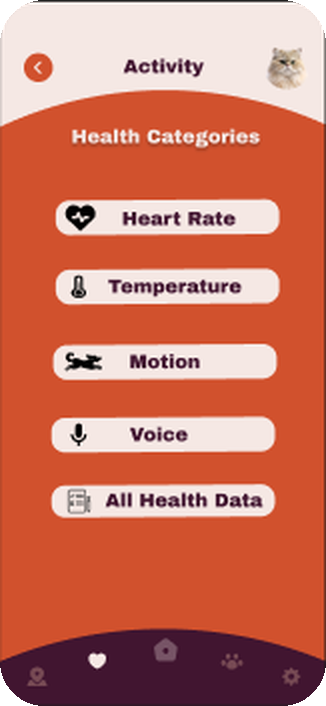
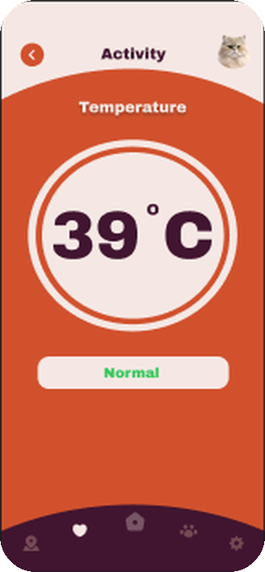
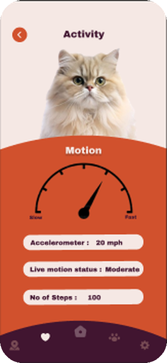
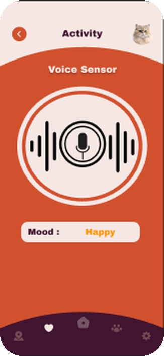
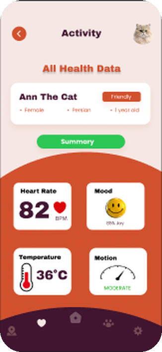
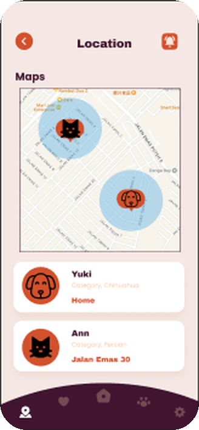
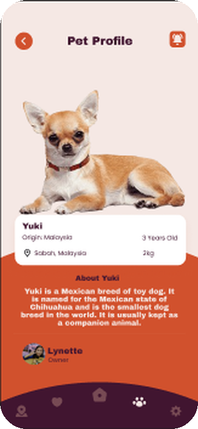
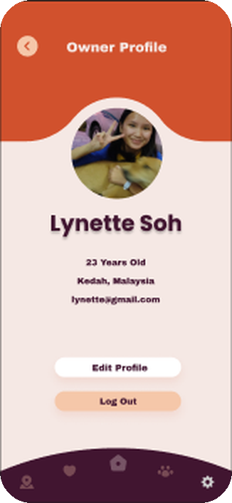
A wildlife awareness & conservation website.
UI/UX Designer — designed and built the Endangered Species page, as part of a 4-person team (each member owned a distinct page of the site).
Wildlife conservation content online is often dense and text-heavy, which makes it easy to scroll past. Wildora needed to present endangered species and conservation actions in a way that felt visual and inviting first, informative second — pulling people in with strong imagery before asking them to read.
For the Endangered Species page, I led with a clean grid of species cards — photo-first, with a bold "Critically Endangered" status tag so urgency is visible before any text is read. Below that, I designed a "How to Help" section using the same card-grid language so the page moves naturally from awareness to action, followed by a curated video section for users who want to learn more. I kept the site's dark forest-green and warm coral accent consistent with the rest of Wildora so the page still feels part of one cohesive site, not a standalone page.
Figma (UI design)
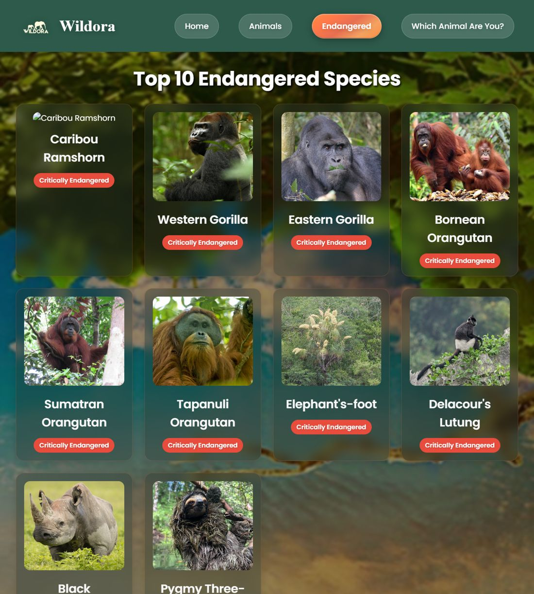
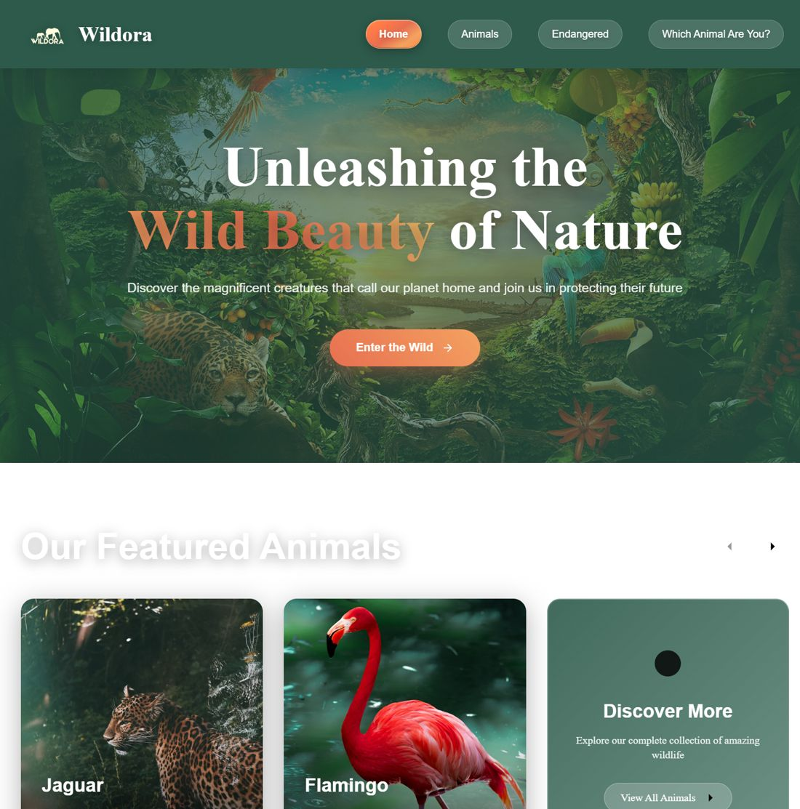
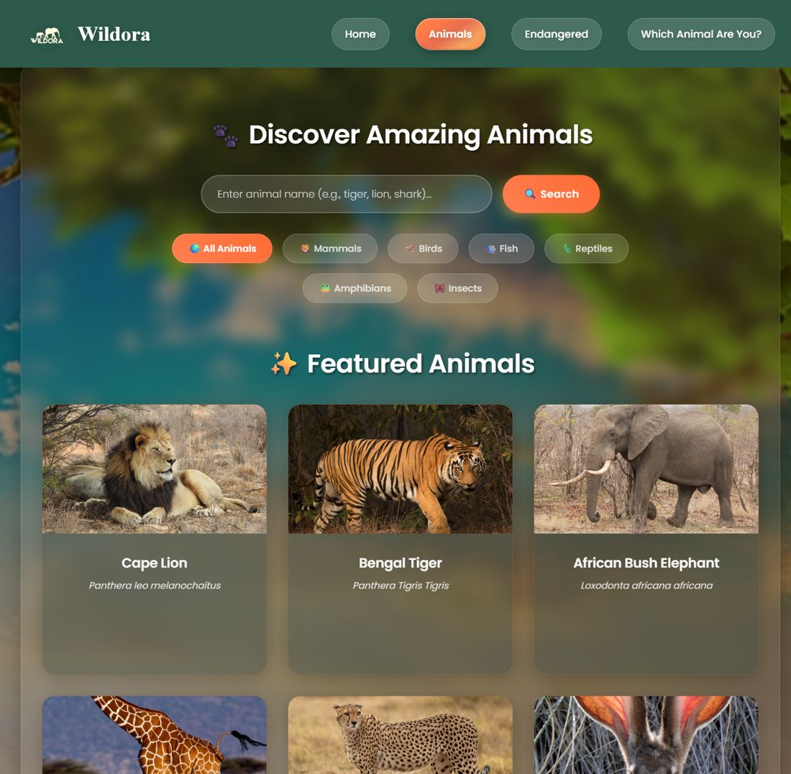
Homepage & Animals Discovery page — designed by teammates, shown for context.
Next project: PawTective →